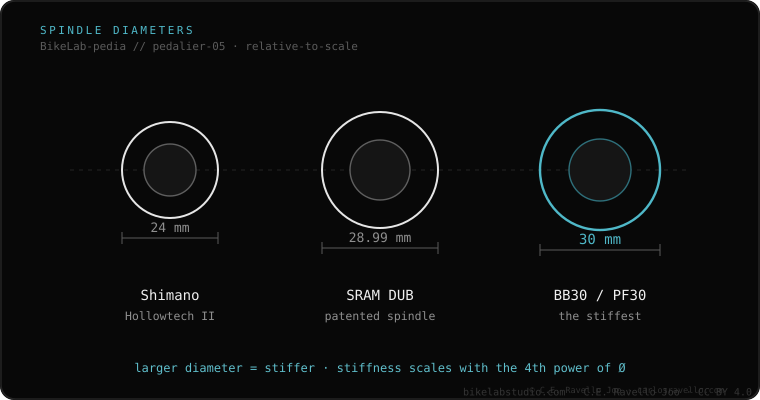

Hollowtech II is Shimano's crank-and-spindle system: a 24 mm steel spindle integrated into the drive arm, with bearings outside the frame. Note: it describes the crank, not the shell standard. It fits almost any frame (BSA, T47, BB86/92, PF30) with the bottom bracket that brings that frame to a 24 mm bearing.
Many people confuse Hollowtech II with a frame type. It isn't: it's Shimano's crank and its 24 mm spindle. The frame can be any standard; what changes is the bottom bracket you choose.
Hollowtech II is Shimano's mid-to-high crank design: a hollow aluminum arm and a 24 mm steel spindle fixed to the drive arm. The bearings sit outside the frame (outboard), allowing large balls and high durability. The left arm is secured with two pinch bolts and a preload cap.

Almost all of them: BSA, T47, BB86/BB92 and PF30, as long as you use the bottom bracket that brings that frame to a 24 mm internal bearing. It's not natively compatible with 30 mm shells without reducer sleeves.
Want to fit a Hollowtech II crank and don't know which bottom bracket to order? Send us the case: Message us on WhatsApp
No. It's Shimano's crank and 24 mm spindle. The frame can be BSA, T47, BB86/92, etc.; the bottom bracket changes.
To keep a 24 mm diameter with high fatigue strength and no risk of cracking.
Before tightening the two left-arm bolts, thread the preload cap until the play is gone, without overloading.